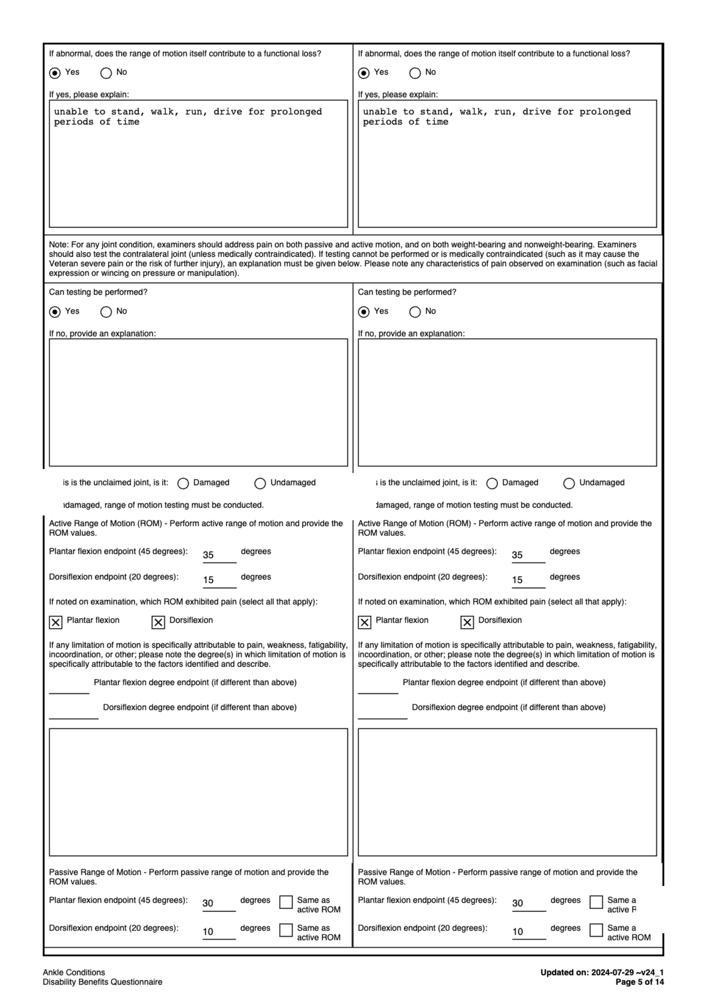
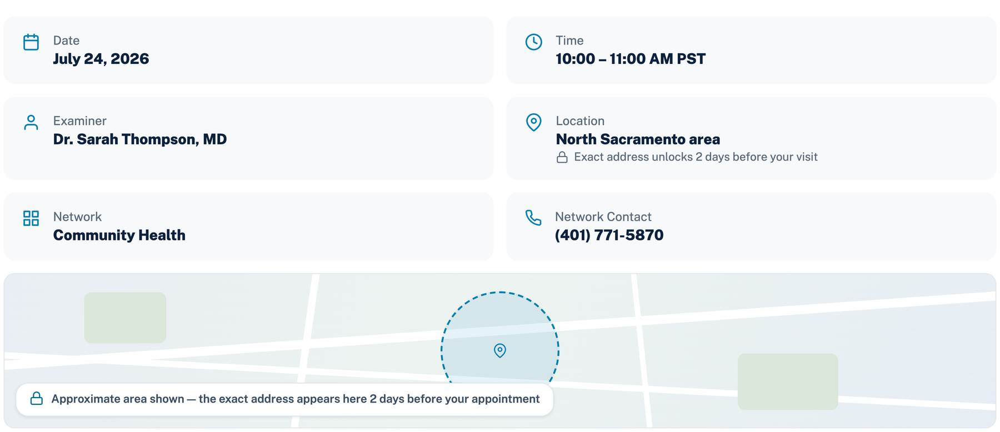
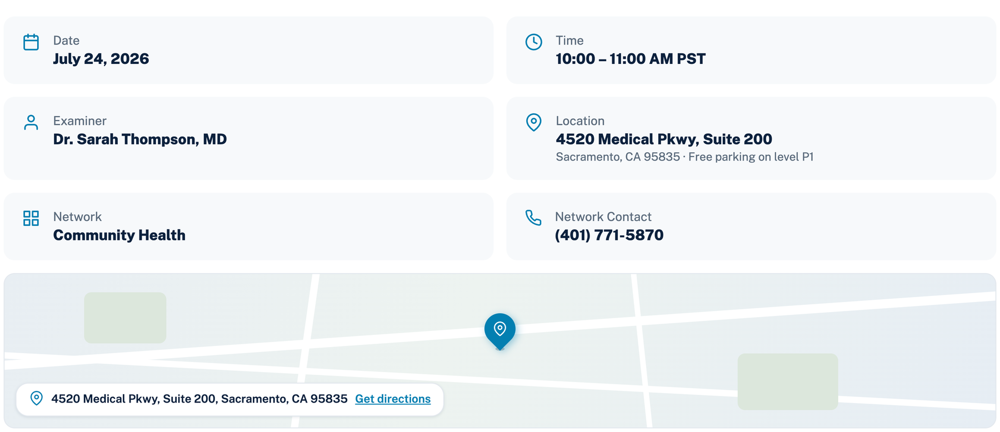
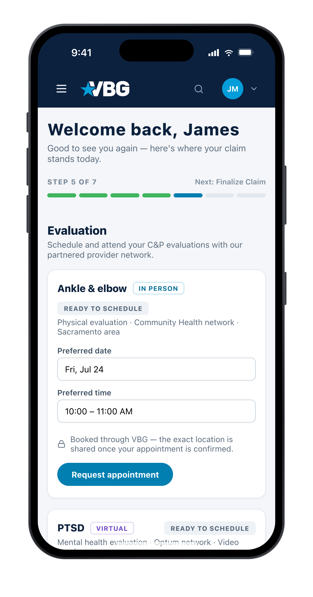
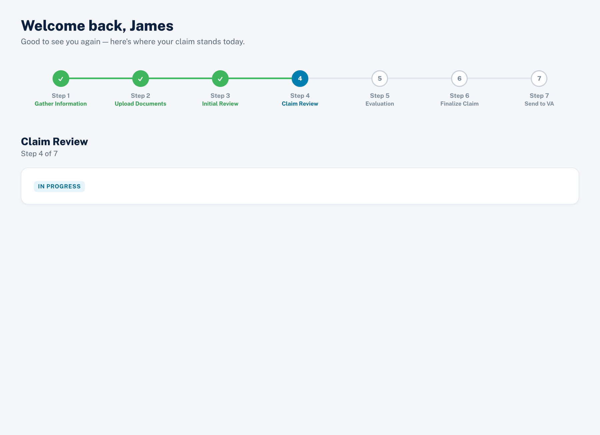
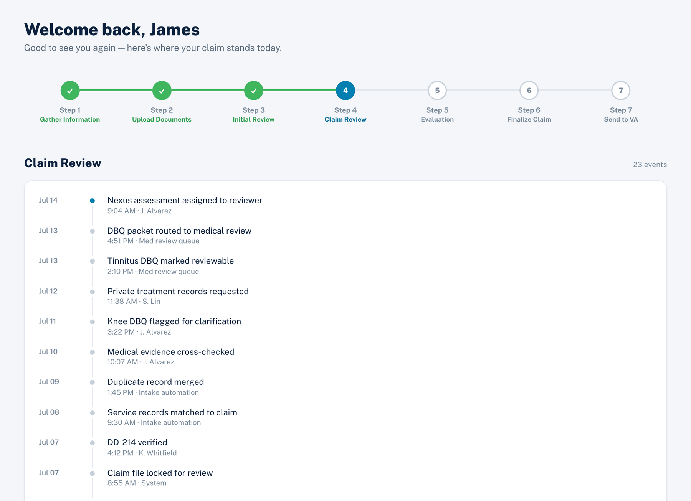
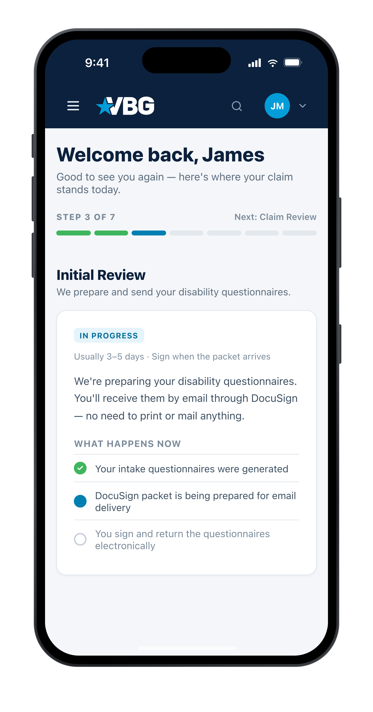

Veteran Benefits Guide runs disability claims for veterans, and ran them entirely on paper. Every claim moved at the speed of a staff member carrying it. I led the design of the platform that took the whole thing online, and cut processing time nearly in half.
(Product)
VBG Portal
(My role)
Product Designer
(Timeline)
2025 – 2026
(Scope)
End-to-end claim filing, 0→1
(Context)
The manual process was the ceiling on the business
Before I joined, every step of a veteran’s claim was done by hand, and the claim reached the VA on day 62 without the veteran ever seeing its status. Serving more veterans meant hiring more people.
(Research)
Two months in the field, one root cause
As the first designer I had no research to inherit, so I spent two months shadowing every role and logging every question and blocker.
2months in the field
6roles shadowed
×Ncalls logged
“
Where am I in the process?
VETERAN · Call shadowing
“
What is dorsiflexion? How many degrees do I put?
VETERAN · DBQ
“
I review it, send it to the underwriter, one change comes back, and each round trip is three or four days.
CASE MANAGER · Interview
“
Once they have the clinic’s number, they reschedule with the network directly — and we lose track of the appointment.
NETWORK SUPPORT COORD. · Interview
The notes clustered into four frictions, all tracing to one root cause: responsibilities, forms, appointments and status lived in people, not the system.
P1Process churn
P2Unfinishable DBQ
P3Appointments slipping
P4Status black box
Affinity map, illustrative: observations clustered into four kinds of friction.
That set the direction: not a nicer internal tool for employees, but moving the process into the system so veterans can complete their own part directly.
(Principles)
Three design principles
01
Self-serve by default
02
The system carries the rules
03
Know where you are, and what’s next
(Problem 1 · Process)
18 touchpoints became 7 steps with clear boundaries
Problem
Kickbacks cost days. The boundaries were wrong.
My read
Who is each step for: the veteran or the paper?
Action
Manual pass → AI mapping → ops.
Result
18 steps → 7, one owner each.
The veteran appears in only three of 18 touchpoints; the rest are employee handoffs with repeated kickbacks.
(Three passes)
From 18 to 7
I cut in three passes: deleted steps that existed only for the paper, used AI to map dependencies and merge parallel work, then went line by line with ops. Ops insisted on keeping the underwriter’s and case review specialist’s independent reviews, and I agreed, because they protect the veteran.
One rule removed the kickbacks, and it lives in the system, not in the training manual.
7steps · one owner each
✓A case doesn't advance until the previous step is confirmed complete
01
Gather info
Veteran
02
Upload docs
Veteran
03
Initial review
Case manager
04
Claim review
Underwriter
05
Evaluation
Vet + Network
06
Finalize claim
Case review
07
Send to VA
Veteran
Completed by the veteran · 4 / 7Handled by employees · 3 / 7
(Problem 2 · DBQ)
An unreadable DBQ became a form veterans finish alone
Problem
Opaque language, fields left blank.
My read
A language and interaction problem.
Action
Rewrite the language → test the shape → answer in the form.
Result
Case managers: from required to fallback.
The DBQ is the VA’s medical questionnaire, a dozen-plus pages of clinical terms that veterans can’t finish. The form itself had to change, in its language, its shape, and by building case managers’ experience into the interface.

Can't read it
DORSIFLEXION · ANKYLOSIS · TALAR TILT
Can't answer it
NO STANDARD → LEFT BLANK
Constant intervention
EVERY FORM NEEDS A CASE MANAGER, QUESTION BY QUESTION
One page of fourteen in the ankle form.
(Step 01 · Language)
A tug of war over language
My line was that the veteran has to understand it; the medical consultant’s was that nothing can drift from VA regulations, HIPAA or clinical intent. Neither could give, so we built a pipeline where AI produces volume and humans make the calls.
All DBQ forms
INPUT
Cluster types
AI
Batch rewrite
AI
Screen tone
Me
Check each item
CONSULTANT · VETO
Question bank
OUTPUT
Non-compliant → back for rewrite
Three boundaries nothing could break; the example below is illustrative.
Boundary 01
A general reading level
Boundary 02
Preserve each field's clinical intent
Boundary 03
No diagnostic or leading phrasing
THE SAME FIELD · BEFORE AND AFTER
ORIGINAL FIELD · CLINICAL LANGUAGE
Plantar flexion: ____ to ____ degrees (normal 0–45°)
→
REWRITTEN · VETERAN LANGUAGE
How far can you press your toes downward?
Severity scale
(Step 02 · Structure)
Content and information architecture first
I grouped every question and marked required, conditional and dependent fields, which fixed the form’s shape before navigation or cards.
SEC 01
SEC 02
SEC 03
SEC 04
SEC 05
SEC …
SHAPE~60 questions · multiple sections · heavy conditional branching→ Navigation mode next (step 02)
(Step 03 · Navigation)
Let testing decide the navigation
I leaned toward one question at a time, but testing with 8 veterans showed a scrolling column won on every measure. What they wanted was control.
Prototype A · One question at a time
Split by section, one question per screen. To change an earlier answer: Back, Back, Back.
Prototype B · A column of questions CHOSEN
Also split by section, but stacked vertically and scrolled. To change an earlier answer: one scroll.
Usability test · 8 veterans · B won on every measure
−3 min
completion time
Higher
answer accuracy
1 scroll
to edit an earlier answer
(Step 04 · Guidance)
Anticipating the questions
I logged where case managers stepped in most and how they helped, and turned it into three card types: narrative (example answer plus checklist), severity scale (real-life scenarios, not 1–4) and measurement (an animated demo).
The three cards went into the design system I built from scratch, so each new DBQ is configuration rather than redesign.
Shipped DBQ questionnaire · desktop
Mobile
Principle ① lands here
New forms: redesign → configuration.
(Problem 3 · Appointment)
Appointments that hold: guardrail and experience in one design
Problem
Veterans reschedule around VBG.
My read
Three parties’ interests pull apart.
Action
Status chain + delayed disclosure.
Result
Disclosure, reminder and deadline all at T-2.
After booking, VBG handed veterans the network’s contact details, so they rescheduled directly and VBG lost track. The veteran, the network and VBG each wanted something different, and a better experience alone couldn’t solve it.
(Action 01 · Status)
Govern the process with status
Each step of the status chain takes a manual confirmation, and cancel and reschedule only happen in the system, more than 2 days before the appointment.
Veteran
Wants · easy rescheduling
VBG
Wants · control of the process
Network
Wants · a stable show-rate
Scheduled
→
Confirmed
Veteran confirms
→
Completed
Confirmed at arrival
(Action 02 · Disclosure)
Delayed disclosure, tested
The network’s address and phone stay hidden until the appointment is close, so rescheduling comes back through the system. That only works with a clear promise of when details arrive and timing that matches when veterans need them, which I tested.
I tested two reveal points before settling on one.
So it landed on two days out, where disclosure, reminder and deadline coincide: guardrail and experience hold in one design.
Until 2 days before · approximate area

From 2 days before · exact address

2 DAYS BEFOREAddress and phone disclosed
2 DAYS BEFOREReminder goes out
2 DAYS BEFORECancel / reschedule closes

Final mockup: appointment.
(Problem 4 · Status)
Invisible progress: the right granularity of transparency
Problem
Tracker shipped, progress calls kept coming.
My read
Wrong granularity, not missing transparency.
Action
Rebuild around what veterans ask.
Result
Expected time + sub-steps.
The tracker showed all seven steps from day one, yet veterans kept calling. Their questions clustered into three: how many more days, where is it now, and does it need me.
The first two rounds missed in opposite directions.
MVP7 steps · system view

Too coarse. “Our steps.” No movement for days reads as a black box.
V2Every internal handoff

Too fine. Twenty-three events. VBG’s operations log, not what the veteran needs.
The fix wasn’t a point between the two; it was changing the question from “what happened inside the claim?” to “which three questions will the veteran ask?” Anything that answered none of them was removed.

Final mockup: status tracker on the home screen.
(Impact)
The numbers, and the structural change behind them
−48.6%
Average claim processing time
← P1 process compression + P2 less rework
53.1%
Veterans self-serve end to end, no employee involvement
← P2 language rewrite + form shape + anticipatory guidance
−49.2%
Customer service call volume
← P3 appointments back inside the system + P4 progress no longer by phone
(Reflection)
What I took away
The best design is never the first version. Working across many stakeholders taught me that I am not always right: I used to assume that standing with the veteran was enough, but rewriting the DBQ meant honoring regulations I couldn’t bend.
The real work was serving veterans better within those rules, and that tension, pulled hard in both directions, often sparked my best ideas.